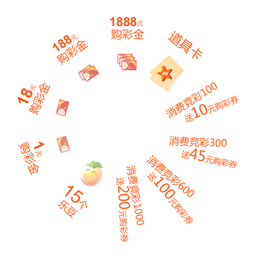

参数说明： flashHoler = "flashContent" //加载flash的容器ID autoPlay = "no" //初始化时是否自动旋转，"yes" or "no" setPointer="yes" //初始化时是否设置鼠标指针，"yes" or "no" url_bg = "bg.png"; //转盘背景图片 url_prize = "prize.png"; //奖品图片 url_pointer = "pointer.png"; //指针图片 url_btnStart = "btnStart.gif"; //开始按钮图片，可以是图片或flash url_btnOver = "btnOver.gif"; //鼠标经过图片 url_btnWait = "btnWait.gif"; //旋转过程中按钮图片 url_btnSuc = "btnSuc.gif"; //旋转结束后按钮图片 W_bg = "510"; //背景图片尺寸 W_btn = "124"; //按钮图片尺寸 W_pointer = "150"; //指针图片宽度 H_pointer = "255"; //指针图片高度 totleNum = 5; //奖品个数 turns = 5; //旋转圈数 stopNum = 3; //中奖奖品 |
外部调用资源说明
| 背景图片：bg.png | 指针：pointer.png | 奖品图片：prize.png | 按钮：btnStart.gif | btnOver.gif | btnWait.gif | btnSuc.gif |
|  |
url_btnStart = "btnStart.swf"; //仅此差别，其余参数均与demo1相同
|
autoPlay = "yes"; //仅此差别，其余参数均与demo2相同
|
url_pointer = "pointer2.png"; //仅此差别，其余参数均与demo3相同
|